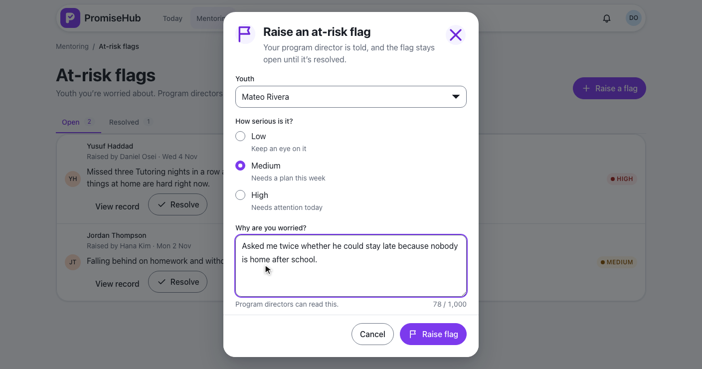
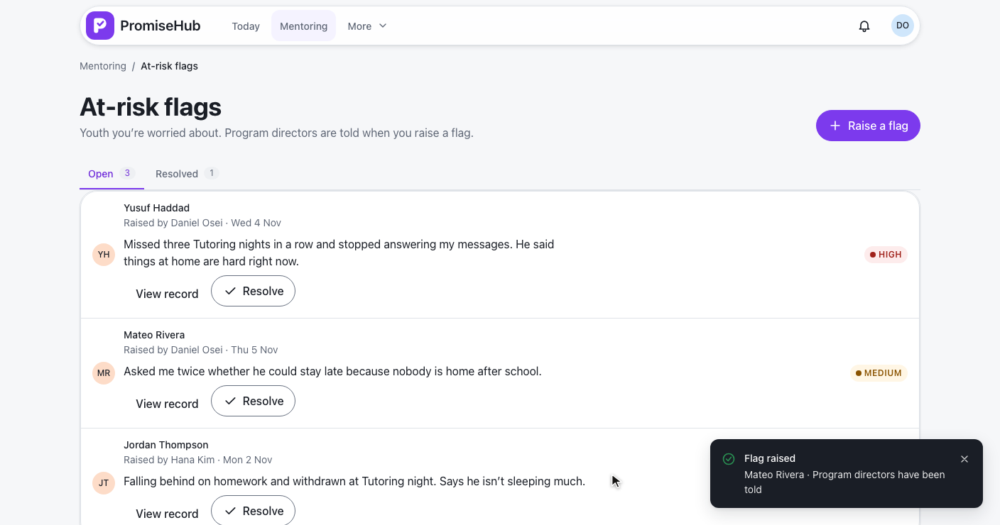
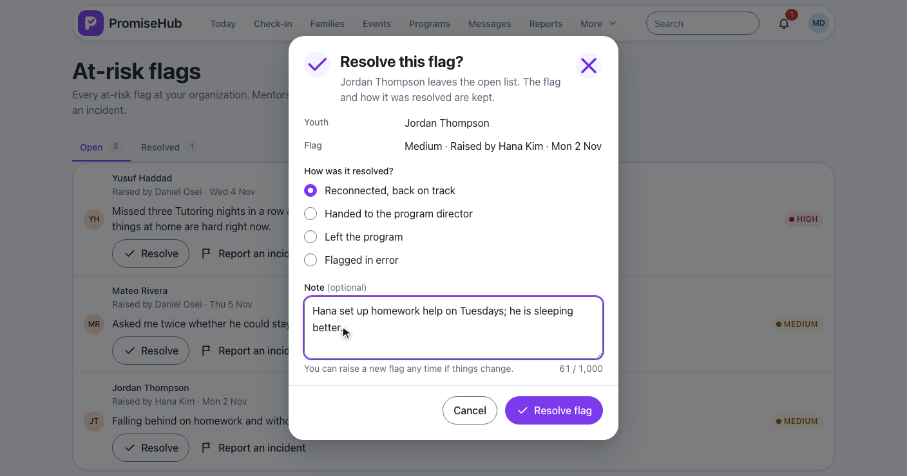
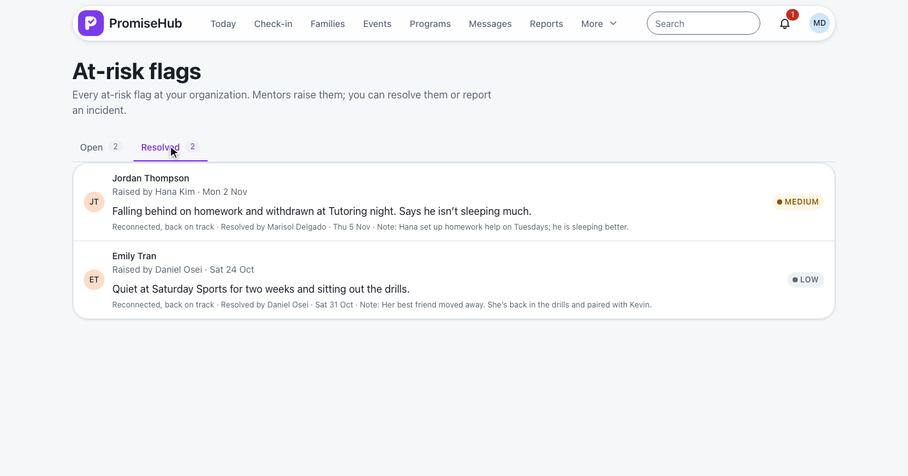
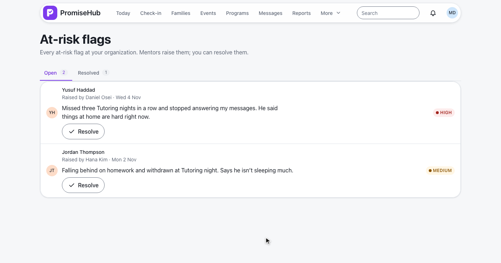
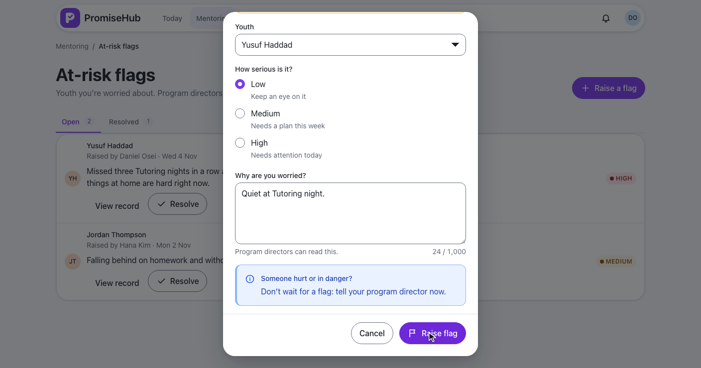
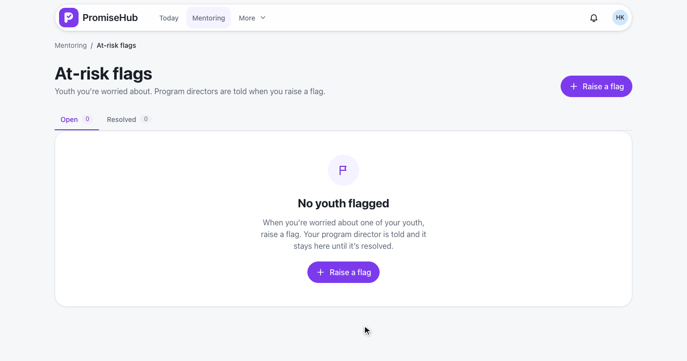

PromiseHub · Video 68
Flag at-risk youth
Put a worry on record, tell the program director, follow it to resolution
Put a worry on record, tell the program director, follow it to resolution
Who, how serious, and why.


| Field | Rule |
|---|---|
| Who raises | A mentor, on a youth in his scope (403 audited), his organization (404) |
| Severity | Low, Medium or High |
| Reason | Required, up to 1,000 characters |
| One open flag | A second answers 409 already-flagged |
| Audit | Created, with the severity; never the reason |
POST /mentoring/flags · L2-091 · ADR 0062
Her notification opens every flag; she resolves Jordan’s.



| Caller | Answer |
|---|---|
| Daniel, a mentor | Flags on youth in his scope; raises and resolves them |
| A youth outside his scope | 403, audited |
| Admins, program directors | Every flag; resolve; told of new ones |
| Other staff, volunteers, guardians, youth | 403 |
| Another organization | 404 |
| Mentoring off | 404, the page goes to Today, nothing deleted |
The flags, and the dialog as a bottom sheet.
Invalid, already flagged, failed, empty, error, Mentoring off.


AtRiskFlagsTests: raising, checks, one open flag, audit, notifications, directors, resolving, scope, roles, tenancy, Mentoring offat-risk-flags.spec.ts on phone and laptop, with axe
Next: assign work to youth